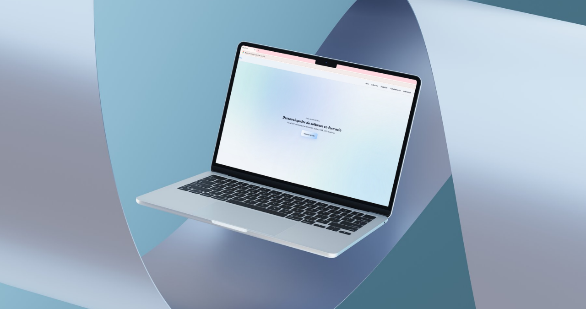
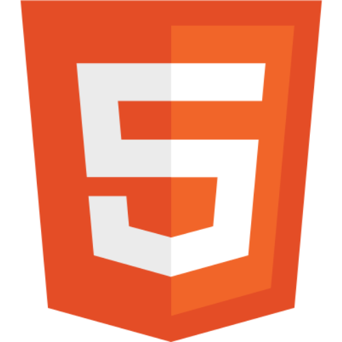
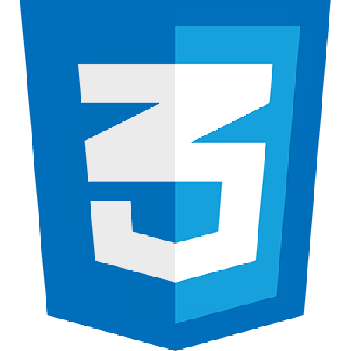
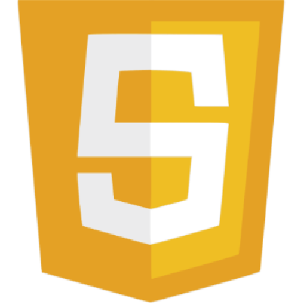

Portfoli Web
Portfoli web per presentar les meves practiques com a desenvolupador.
El projecte
Aquest projecte és una web de portfolio personal dissenyada per presentar projectes, habilitats i experiència com a desenvolupador. L’objectiu principal és crear una interfície clara, moderna i minimalista que permeti mostrar el treball de manera professional.
La web està pensada no només com una pàgina informativa, sinó com un projecte frontend complet, amb estructura modular i bones pràctiques de desenvolupament.
CSS modular amb estil consistent
Sistema de disseny amb espaiats, tipografia i colors coherents.
Disseny minimalista i modern
Interfície neta inspirada en estils com Apple i Notion, prioritzant la claredat i la llegibilitat.
Projecte orientat a producte
No és només una web personal, sinó una presentació de projectes amb enfocament professional i comunicació clara del valor de cada aplicació.
Experiència d’usuari optimitzada
Navegació fluida amb jerarquia visual clara i estructura intuïtiva.
Tecnologies

HTML

CSS

JavaScript
Disseny i enfocament
El disseny del portfolio segueix un estil minimalista i centrat en el contingut, amb l’objectiu de prioritzar la claredat i la llegibilitat.
S’ha buscat una estètica inspirada en productes moderns com Apple o Notion, utilitzant espais en blanc, jerarquia visual clara i una tipografia neta per facilitar la lectura.
La interfície està pensada perquè l’usuari pugui entendre ràpidament els projectes i les habilitats sense distraccions innecessàries.